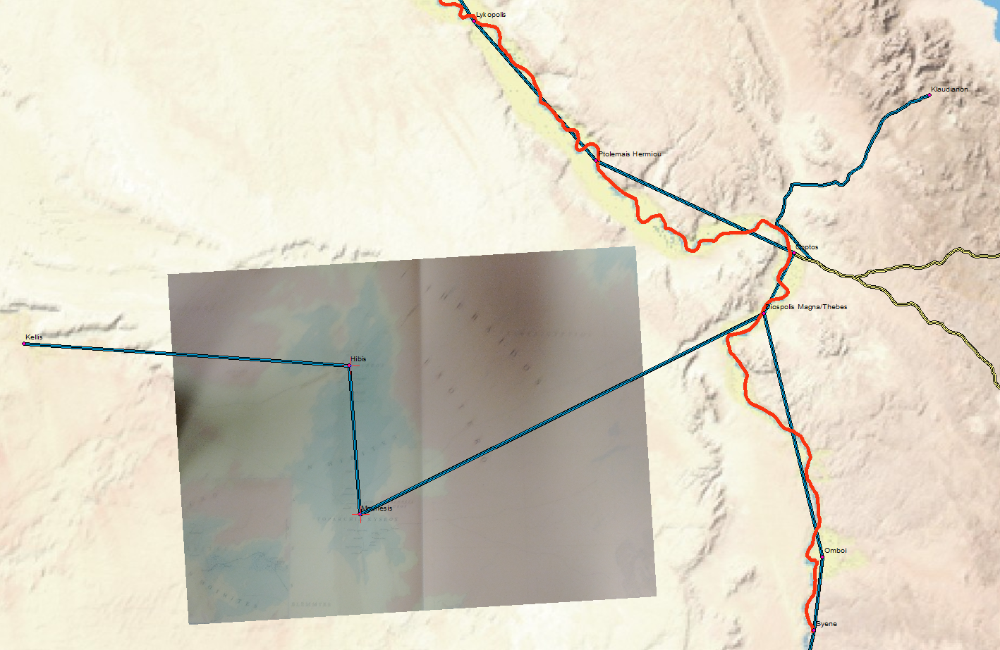

Adventures in Georectification – Mobile Edition
Originally published at Digital Humanities Specialist. This edition preserves the original text and historical context.
Originally published at Digital Humanities Specialist. This edition preserves the original text and historical context.
